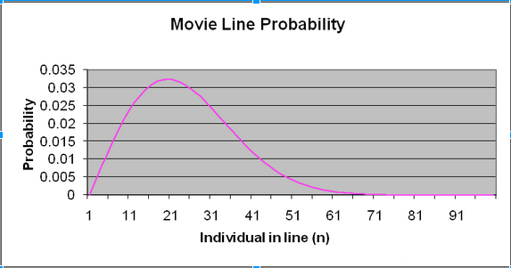
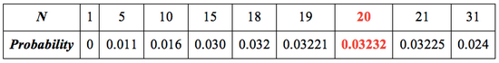

Extensions to the Birthday Principle
Using the Birthday Principle in The Movie Line problem.
The Movie Line Problem:
The local movie theatre has a promotion: the first person in line whose birthday matches someone in front of them wins a free ticket. Which person in the queue of 100 people is most likely to be the lucky guy / gal?
See Solution and Explantion
The answer is 20! But why?
We can solve this problem similarly to how we thought about solving the original Birthday Principle problem. Continue onwards to see this problem fully explained.
Each person whispers their birthday into the ticket-master's ear. If the person's birthday doesn't match anyone who was in front of him, then the ticket-master moves to the next person.
Remember that the chance of finding of finding a pair of matching birthday is 50% for 23 people in the Birthday Problem, so we would expect that a similar outcome for the nth person in line to win the ticket!
Let P(n) be the probability that the nth person in the line gets the free ticket.
Since the first person has no birthdays to compare too, he / she would never get that free ticket, so P(n=1) = 0
For the second person in line to win, his birthday has to be the same as the first person's birthday.
Thus, the first person can have any of the 365 birthdays (365/365). Then, whatever day it is, the person behind him must have that exact birthday, so the probability of the second person in line winning is (365/365) * (1/365), or (365/365^2).
Once again, instead of thinking about how likely it is two people share a birthday, let's think about the chance that a group of people don't share a birthday.
Thus, for the third player to win, that means that the first and second players have unique birthdays, and he must match one of the two birthdays before him. This becomes the probability:
P(n=3) = \dfrac{365}{365} \cdot \dfrac{364}{365} \cdot \dfrac{2}{365} \cdot
We can see that we can calculate the probability of Person 3 getting the ticket by multiplying the chance of him having a repeat birthday with the chance of the other two participants NOT having a repeat birthday. All three of those events need to come true if Person 3 is to win, so we multiply the probability of those events together.
In general, looking at the trends (maybe we can display all the 3 answer for P (n) here), the formula for calculating P(n) is:
P(n) = \dfrac{365 * 364 * 363 ... * (365 - n + 1)}{365^n}
Calculating these values for 'n', we can get the following graph and table:


It is thus clear here that 20 is the most likely to win, as that is where probability is highest, and after that point probability begins to decrease.
P.s. Go with a twin / friend with the same birthday to the movie and be the first two in line then one of you will win for sure! **Just joking! calculation for this problem assumes that no one has 'planned in advance to win' and a year has 365 days and birthdays have equal probability to falling on any one of the 365 days.